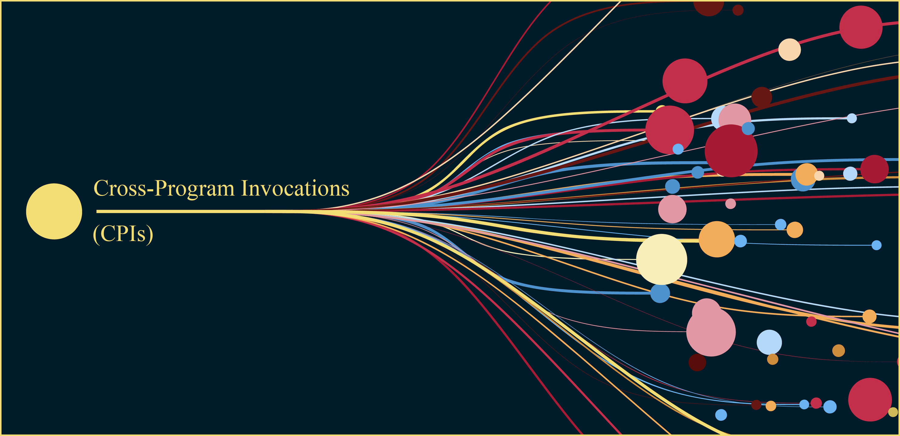

Engineering
What is a cross-program invocation (CPI) and why should you use it in your Solana program?
What are cross-program invocations?
Cross-program invocations (CPIs) enable one program to call another program directly on the Solana blockchain and to invoke instructions of the called program during execution. By combining the functionalities of multiple programs, CPIs enable you to create complex and powerful applications.
Why should you use CPIs?
CPIs are a core feature of Solana's programming model and are integral to the Solana architecture. CPIs offer the following benefits:
- Composability: CPIs enable you to combine the functionality of multiple programs.
- Reusability: CPIs limit repetition by enabling you to call programs with additional features.
- Atomic transactions: CPIs enable multiple program interactions to occur within a single transaction and ensure that operations either all succeed or all fail.
- Security: CPIs enable you to leverage the security and auditing of external programs and free you from reimplementing sensitive operations.
- Ecosystem integration: CPIs enable your programs to integrate with the broader Solana ecosystem, such as token programs or governance systems.
- Efficiency: CPIs occur within a single transaction and don't require multiple calls.
- Upgradability: CPIs enable your programs to interact with upgradeable programs, which can facilitate benefits from improvements or new features without changing your own code.
Constructing and Using CPIs
You can execute CPIs using the invoke or the invoke_signed function (both located in the solana_program
crate). When using CPIs to invoke a second program, the called program can make further CPIs to other programs, up to a maximum depth of 4.
Using CPIs With the invoke Function
You use the invoke function when you want to call another program and when all required signers are accessible prior to
invocation (and you are not required to sign for a Program Derived Address in the CPI). For example, you would use this method if you
were invoking a program to transfer tokens between accounts that are owned by a single user.
| Signature | Uses signatures provided in the transaction |
|---|---|
| Parameters | instructionaccount |
| Authority | Cannot sign for PDAs |
To use CPIs with the invoke function:
- Import all necessary modules.
- Prepare the accounts:
- Identify all accounts that will be involved in the CPI.
- Ensure you have the necessary
AccountInfostructures for all accounts in the CPI. - See the CPI
AccountInfodocumentation for more information.
- Create the instruction. Construct an
Instructionstruct with:- A vector of
AccountMetastructures representing the accounts. - The instruction data as a vector of bytes.
- See the CPI
Instructiondocumentation for more information.
- A vector of
- Prepare the
account_infos.
Create a slice ofAccountInforeferences for all accounts involved in the instruction. See the CPIAccountInfodocumentation for more information. - Call
invoke.
Use theinvokefunction to execute the CPI. See theinvokedocumentation for more information. - Handle the result.
Theinvokefunction returns aProgramResultand requires you to handle any potential errors. See Employing Best Practices and Troubleshooting CPIs for more information.
The following example (in rust) was generated by Claude 3.5 and demonstrates a CPI to the system program to transfer Solana native currency (SOL) from one account to another.
invoke functionUsing CPIs With the invoke_signed Function
You use the invoke_signed function when you want to call another program and when your program is
required to sign for a Program Derived Address (PDA) that it controls (when you must demonstrate that your program has authority over a
specific PDA). For example, you would use this method if you were invoking a program to initialize a token account
owned by a PDA or if the program were signing a transaction on behalf of a PDA-controlled escrow.
| Signature | Generates a signature for the PDA using the provided seeds |
|---|---|
| Parameters | instructionaccountseeds |
| Authority | Can sign for PDAs owned by the calling program |
To use CPIs with the invoke_signed function:
- Import all necessary modules.
- Prepare the accounts:
- Identify all accounts that will be involved in the CPI.
- Ensure you have the necessary
AccountInfostructures for all accounts in the CPI. - See the CPI
AccountInfodocumentation for more information.
- Create the instruction.
Construct anInstructionstruct with:- The program ID of the program invoked.
- A vector of
AccountMetastructures representing the accounts. - The instruction data as a vector of bytes.
- See the CPI
Instructiondocumentation for more information.
- Prepare the
account_infos.
Create a slice ofAccountInforeferences for all accounts involved in the instruction. See the CPIAccountInfodocumentation for more information. - Prepare the seeds for the PDA:
- Determine the seeds used to derive the PDA.
- Include the bump seed.
- See the Program Derived Addresses documentation for more information.
- Call
invoke_signed.
Use theinvoke_signedfunction to execute the CPI. See theinvoke_signeddocumentation for more information. - Handle the result.
Theinvoke_signedfunction returns aProgramResultand requires you to handle any potential errors. See Employing Best Practices and Troubleshooting CPIs for more information.
The following example (in rust) was generated by Claude 3.5 and demonstrates a CPI to the System Program to transfer Solana native currency (SOL) from a PDA-controlled account to another account.
invoke_signed functionEmploying Best Practices and Troubleshooting CPIs
Consider the following best practices and troubleshooting tips when using CPIs with invoke_signed and invoke functions:
- Ensure that all required accounts—especially program accounts—are included and in the correct order.
- Verify that accounts have the correct permissions and confirm the account ownership.
- When working with
invoke, ensure that the necessary signers are included in the transaction. - When working with
invoke_signed, verify that the PDA seeds and bump seed are correct. - Ensure that the instruction data format and content are correct.
- Ensure that the data serialization/deserialization is correct.
- Verify that you are calling the intended program ID.
- Use proper error handling to catch and identify specific issues.
- Implement logging for better visibility into the execution flow.
- Ensure that your program is compatible with the current Solana version.
- Ensure that you are not exceeding the compute unit consumption limit, especially if you are working with complex operations.
- Verify that account states are as expected before and after the CPI.
- Leverage Solana's error codes to solicit specific error information.
- Use
solana logsor RPC calls to view detailed transaction logs. - Simulate transactions to identify issues before sending them.